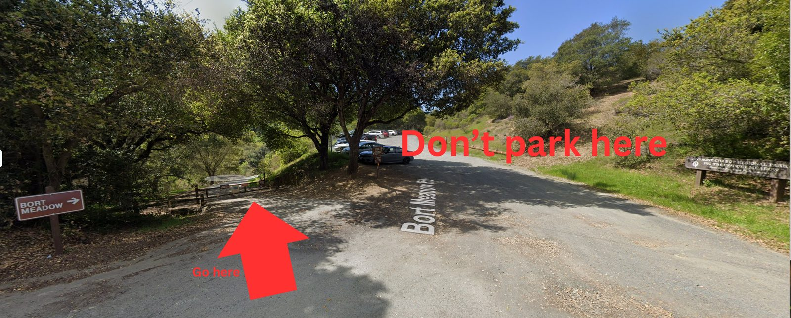
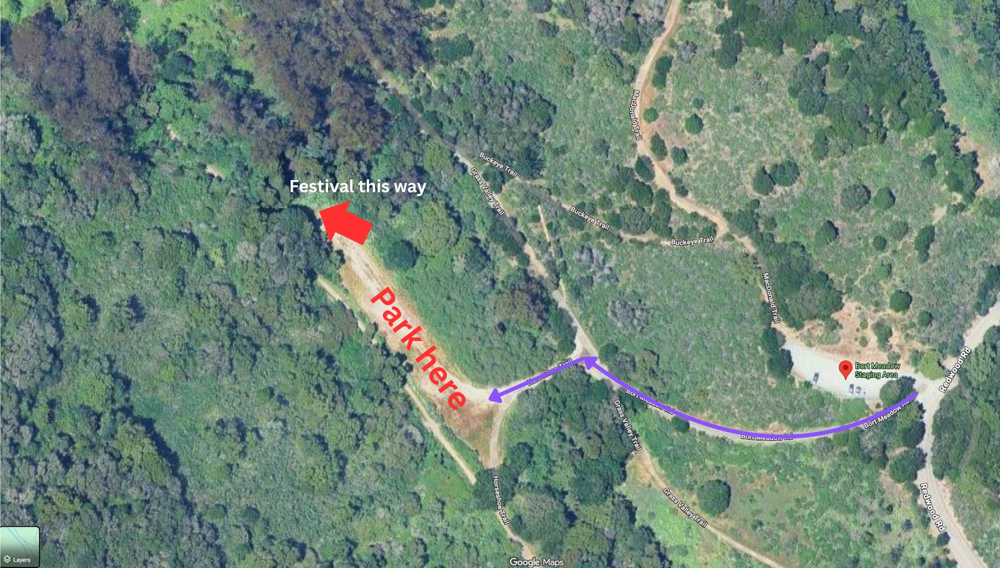
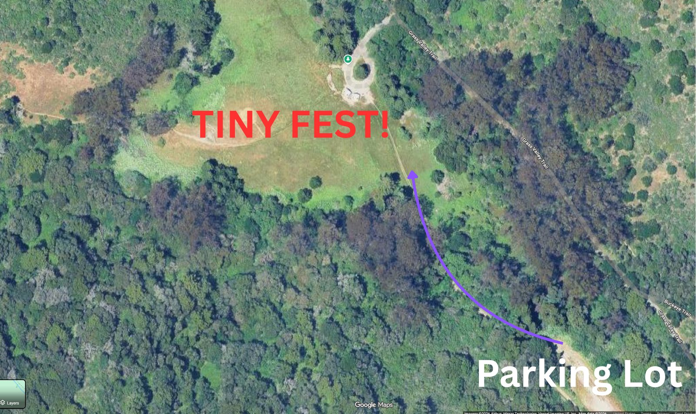
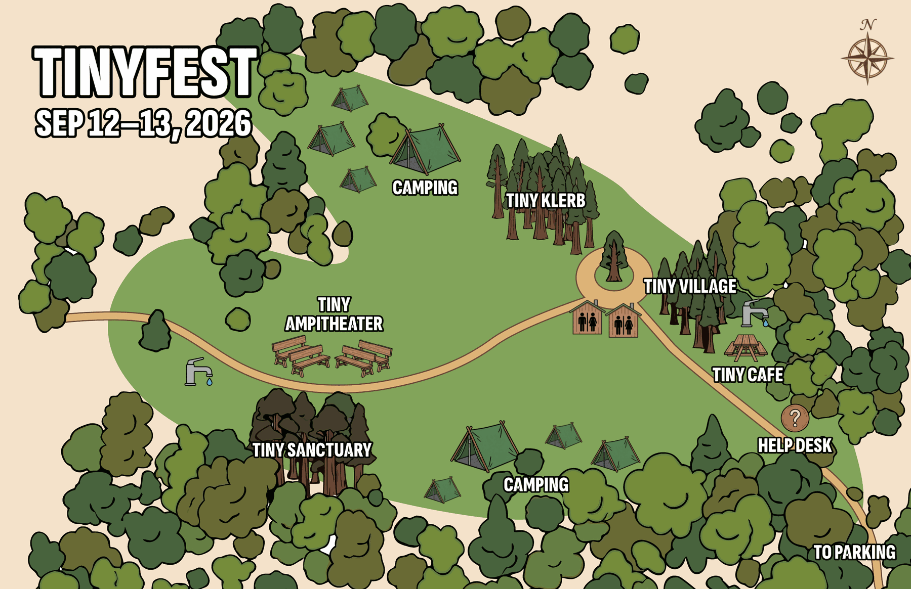

We're excited to frolic with you at Tiny Fest! Please read this carefully, it'll help you have the best possible time at our renegade forest party.
Please review our community agreements and sign this waiver prior to coming to the festival so your entry is fast and smooth.
Check out the full directions before arriving.
Tiny Fest sits off-grid — no mains power, no cell service, and the last stretch isn't paved. Here's the route: how to get there, where to park, and what check-in looks like.
Punch the address below into your maps app before you lose signal — the last stretch is where GPS tends to give up.
At the staging area: don't pull into the main day-use parking lot straight ahead — that's public trailhead parking, not ours. Instead, look for the gate just to the left of the lot entrance. It'll be unlocked — go on through and onto the dirt road.

Follow the dirt road in from the gate until you hit another dirt road crossing it — a perpendicular T. Turn left there and you'll find the parking lot. Park up, then walk to the far end of the lot — that's where the path into the festival grounds picks up.

Doors open at 3:00 PM — come any time after that, there's no cutoff.
From the far end of the lot, head into the trees toward the noise and light (once it's dark, you won't miss it) — a short walk through the woods opens onto the festival meadow.

The check-in table sits right at the meadow entrance, where the walk-in path opens up. Volunteers there will greet you — your name and/or email is enough to get checked in. Have your ticket or confirmation handy if you've got it (from Secret Party), but name/email works either way.
The lay of the land once you're in — camping, the amphitheater, Tiny Klerb, Tiny Village, Tiny Cafe, the help desk, restrooms, and water.
There are 4 brick-and-mortar vault toilets on site — the non-flushing kind you'll find at most state parks, not port-a-potties.

By attending Tiny Fest, we agree to the following community agreements.
If you run into issues, please go to the help desk area to alert a volunteer. There will also be walkie talkies at each area of the event if you need to reach someone remotely.